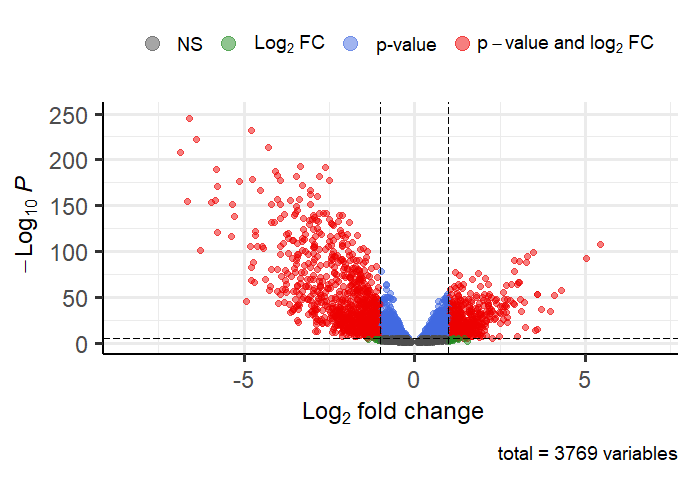

The objective of this project was to identify differentially expressed membrane associated genes (MAG) and their pathways in breast cancer RNA-Seq data. The epigenetic landscape of breast cancer and how it differs from normal breast tissue cells can be a lynchpin in drug discovery. Identifying cancer specific changes in MAG’s is vital in elucidating drug targets and developing novel cancer treatments such as immunotherapuetics and chemotherapeutics. Nine pathways were identified with differentially expressed genes (DEG) that are associated with tumor formation and proliferation. Understand gene-level differences in pathways like the ones identified in this project will help drive the development of novel cancer research and treatment in the future.

1029 STAR count matrices of RNA-Seq data were downloaded from TCGA-BRCA project publicly available datasets. Other breast cancer data and metrics were excluded to ensure homogeneity in experimental treatments across the sample set. 102 of the count matrices were from solid normal tissue (SNT) samples (N = 102), and the remaining 927 were from primary tumor (PT) samples (N = 927). After the count matrices were obtained, differentially expressed genes (DEG) in the PT samples were determined using Bioconductor’s edgeR and limma packages. A 0.5 p-value cutoff was used while calculating DEG’s. Differential expression of all significant DEG's are visualized in figure 1.

After all DEG’s were identified, DEG’s that were above 1.5 log fold change (logFC) and below -1.5 logFC were filtered out. After differential gene expression analysis was complete, a DEG PPI-network was constructed using STRING db’s online tool (figure 2). Once the PPI-network was constructed, MCL gene clustering with an inflation parameter of 3 was performed. The clusters underwent filtering, excluding clusters with less than 6 genes and those that did not have interactions with the rest of the PPI-network, leaving 24 gene clusters remaining. The remaining clusters underwent pathway analysis using Cytoscape’s NDEx iQuery with a p-value cutoff of 0.5. Nine of the clusters that were associated with tumorogenesis, growth, and proliferation pathways were down-selected. These pathways are described in table 1, and their differential expression visualized in figure 4.
| Epithelial to mesenchymal transition | Hippo-Merlin Signaling | Sphingolipid Metabolism | PI3K/AKT Signaling | Integrin Signaling | Chemokine Signaling | G Protein Signaling | Activating Invasion and Metastasis | Sustained Proliferative Signaling |
|---|---|---|---|---|---|---|---|---|
| The process in which epithelial cells undergo a transformation into a mesenchymal phenotype | The Hippo-Merlin pathway supresses cell growth and proliferation, and plays a role in apoptosis | Spingolipid metabolism plays a role in cell growth, adhesion, and recognition | PI3K/AKT Signaling promotes cell growth, survival, metabolism, and angiogensis | Integrin signaling controls cell shape, mobility, and acts as a cell cycle regulator | Chemokine signaling promotes and coordinates cell migration | G -protein signaling regulates a myriad of bodily processes, that can affect cell growth and migration | As the name suggest, this pathway encourages cell migration and mobility. | Sustained proliferative signaling increases cell growth and division |